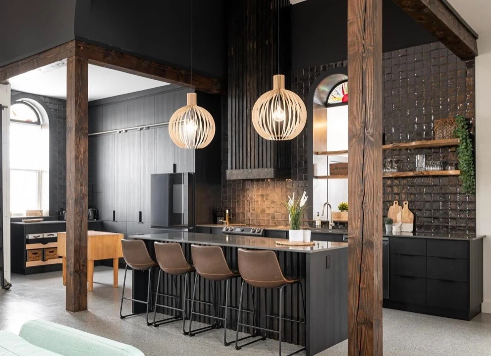
Church kitchen · Featured work
The Church Kitchen
A kitchen completed by White Forest in a rebuilt church, with black cabinetry, textured tile and a generous island.
Read the case study ↗Explore the church kitchen, custom home and full-house renovation. Wider church interior photos are included as context for the kitchen.
Explore a church kitchen, a custom home and a separate full-house renovation by White Forest.
20 photos
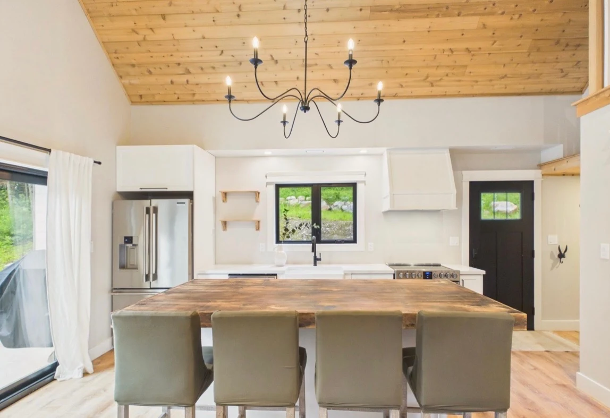
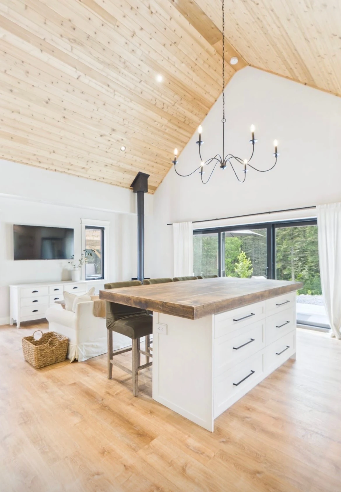

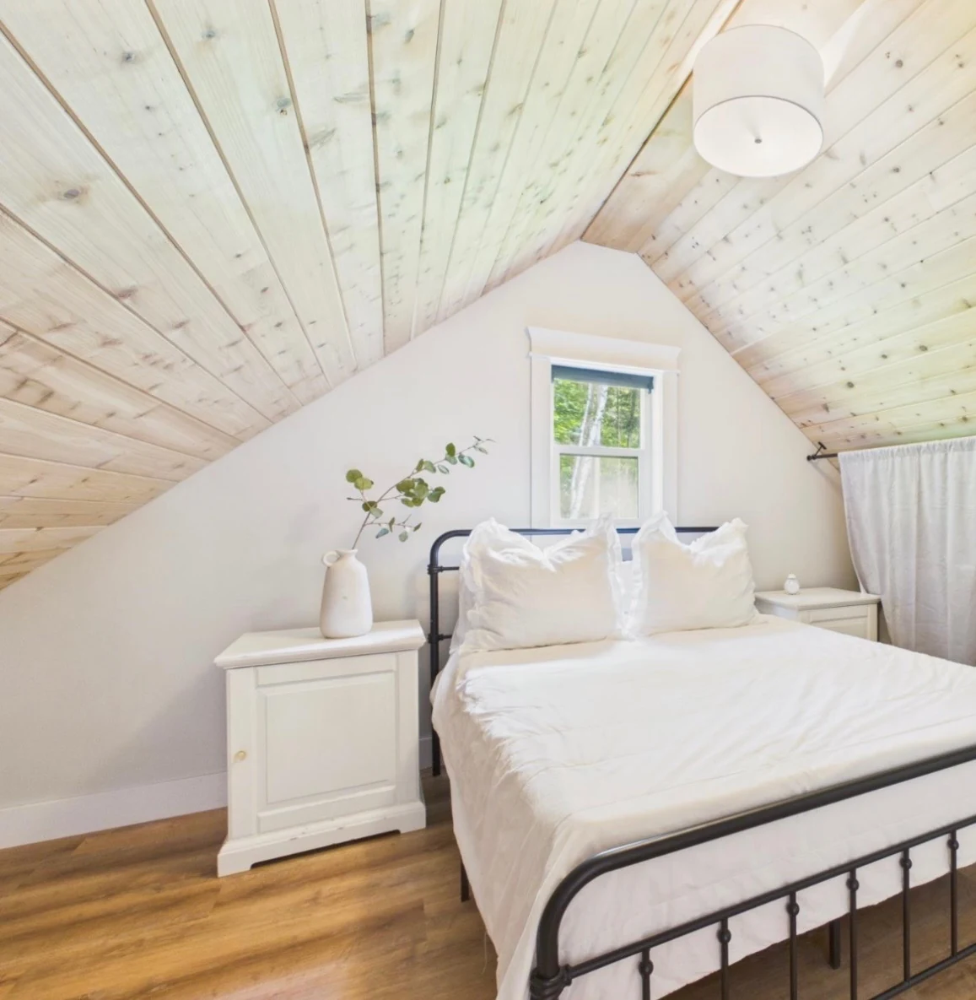

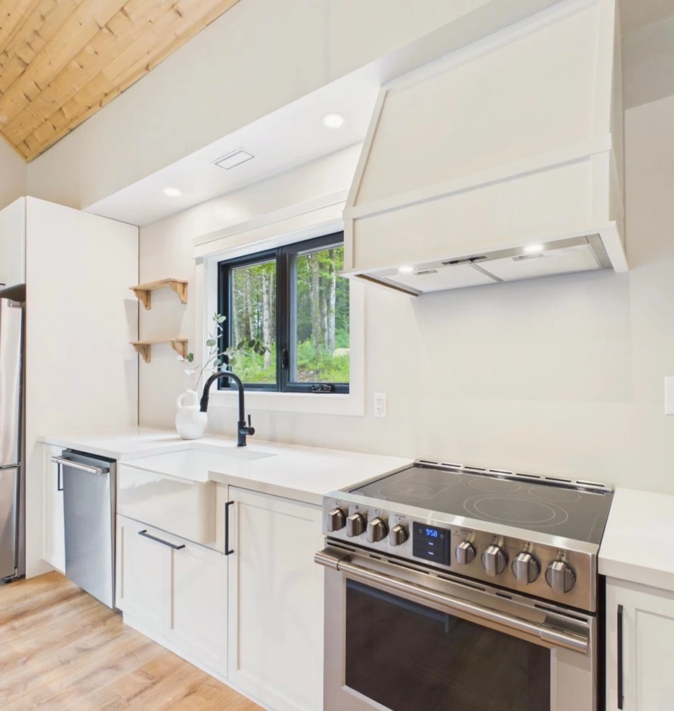
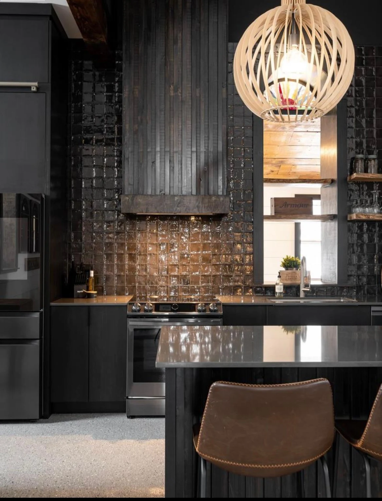
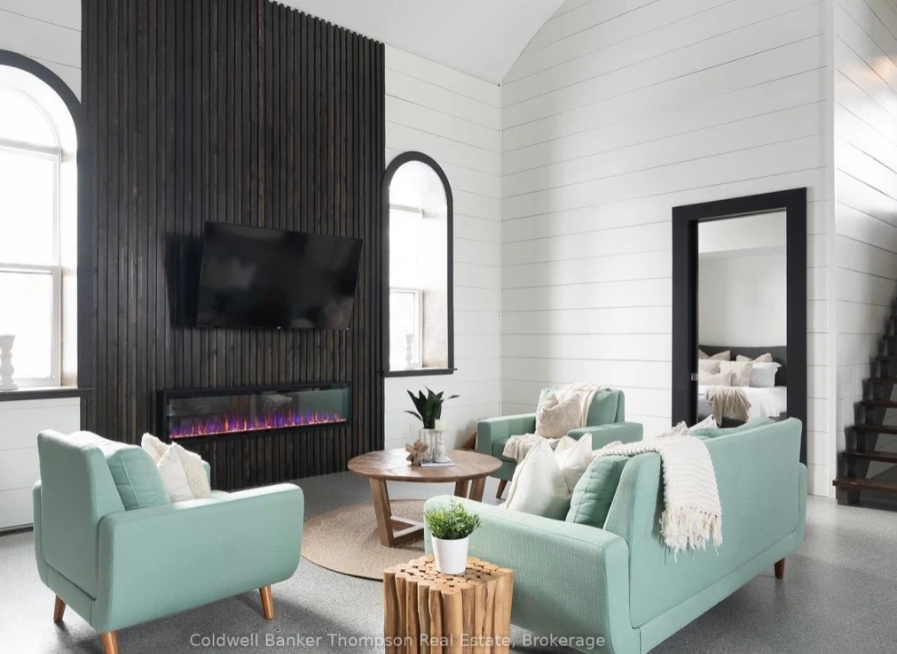


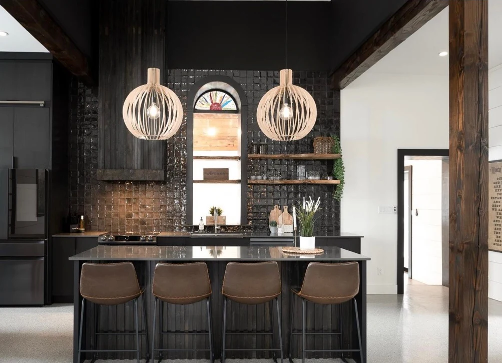

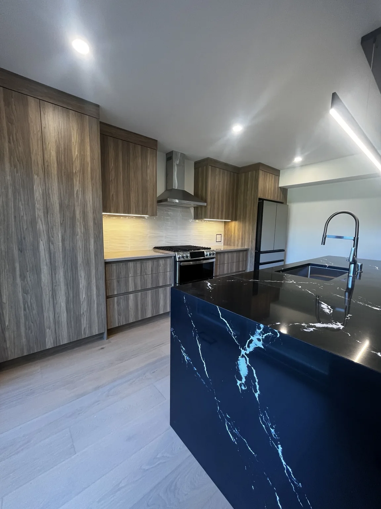
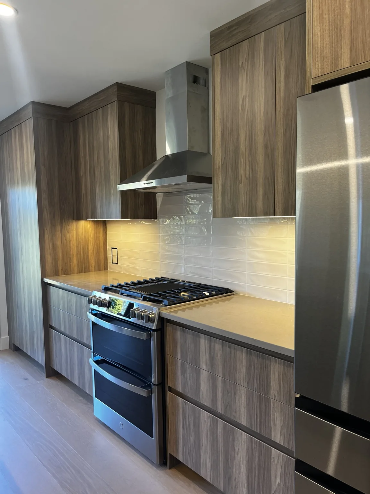
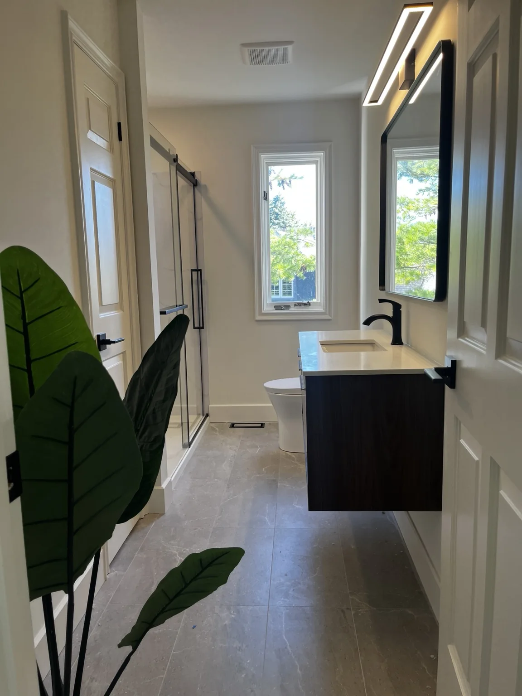
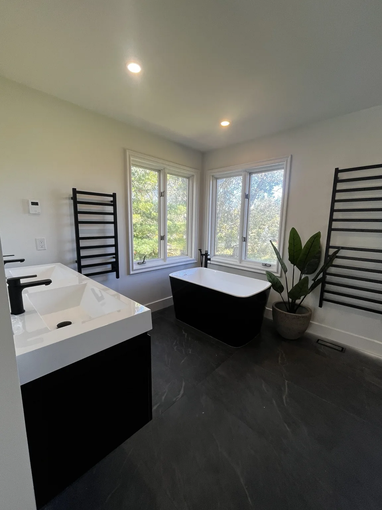
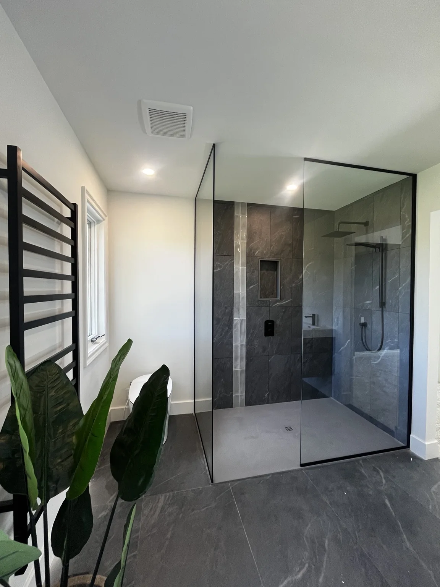
Tell us where your property is, what you want to change and when you would like to begin.